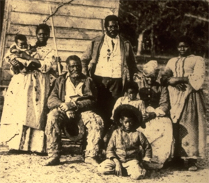
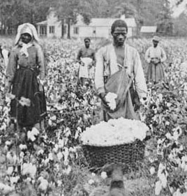

|
Plantations were agrarian enterprises that employed large
number of workers who produced crops for domestic and
foreign markets. Before the Civil War, plantations primarily
relied on the labor of African-American slaves who tended to

The cotton gin
|
a wide range of crops including cotton, rice, and tobacco.
After emancipation, sharecropping and other labor systems
replaced slave labor in the South, but plantations remained
a part of the region's agricultural system.
Nineteenth-century plantations were not confined to the
American South or to slave-holding societies. Spanish and
Portuguese colonists ran sugar plantations in their South
and Central American colonies, and English colonists used
the system in Ireland and in many of their seventeenth- and
eighteenth-century colonies. The economy of colonial
Virginia relied heavily on tobacco plantations while rice
and indigo plantations were particularly widespread in the
South Carolina and Georgia low country.
Southern plantations dramatically changed as a result of
Eli Whitney's cotton gin. This machine, which appeared in
1793, drastically cut the costs of growing short-staple
cotton, making it the most profitable crop available to
planters. They subsequently turned to it in great numbers,
and it became known as "King Cotton." The gin allowed
planters, who originally grew cotton in the South Carolina
and Georgia upcountry, to move the crop south and west
toward occupied Indian lands. The cotton kingdom further
expanded after the forced removal of the southeastern
Indians in the 1830s and the 1845 annexation of Texas.
Cotton plantations were ultimately concentrated in what
became known as the "Cotton Belt," a stretch of fertile land
in Alabama, Mississippi, and Louisiana, where more than half
of the nation's cotton was grown by the 1830s. South
Carolina, which grew 60 percent of the crop in 1800, fell to
less than 10 percent on the eve of the Civil War. Although
cotton was king by the start of the Civil War, Southern
planters also grew tobacco, rice, hemp, indigo, and wheat.
Not all Southern farms were plantations, and not all
slave owners were planters. Plantations had large labor
populations and usually specialized in one agricultural
product. In order be considered a planter, one had to own
at least twenty slaves and a significant piece of land. In
|

Five generations of a slave family on a Mississippi plantation
|
1860, only about 50,000 of the 400,000 Southern slave owners
were classified as planters. Wade Hampton, the largest
slaveholder in 1860, owned more than 3,000 slaves who worked
his Mississippi and South Carolina plantations.
Throughout the year, male and female slaves performed an
endless number of tasks on Southern plantations. Crop
cultivation consumed most of their time, with the harvest
generally demanding the longest and hardest hours of work.
African-American slaves hoed, weeded, picked, watered,
reaped, and planted, often from sunup to sundown. They
sometimes oversaw the labor of their fellow slaves. In
slower months, slaves mended fences, cleared lands, and
performed other seasonal tasks. Large plantations contained
house slaves who tended to various needs of the plantation's
mansion, or the "big house." Although not all domestic
tasks were reserved for females, slave women frequently
served as nursemaids, mammies, seamstresses, laundresses,
and cooks for their planter masters and mistresses. In
addition to slave quarters, plantations also had
smokehouses, stables, barns, sheds, a chapel, and an
occasional schoolhouse for white children.
The Civil War physically devastated many Southern
plantations. Early in the War, the Union blockade limited
the South's ability to export its raw goods. In addition,
the Confederate military enlisted many white planters and
overseers, leaving white Southern women to run the
plantations. Although planters could sometimes avoid
military duty under the Twenty-Slave Law, which exempted any
white man who had twenty or more slaves under his control,
only four to five thousand men claimed exemptions during the
war. With most white men serving in the Confederate Army,
slaves increasingly resisted their bondage, refusing to
work, wandering the countryside, and, when possible, running
to the safety of Union lines. A more direct devastation of
Southern plantations resulted from the various invasions
visited upon the South by the Union army. In particular,
|

Picking cotton was exceedingly hard work
|
Union soldiers on William Tecumseh Sherman's 1864-1865 march
through Georgia and the Carolinas burned millions of acres
of cotton and other crops, destroyed homes, broke fences and
farming implements, and otherwise razed plantations in their
path.
When the war ended, many Southern planters struggled to
rebuild. Only 180 of the more than 1200 sugar plantations
in Louisiana, for example, sold any surplus in 1865. Many
plantations were sold to pay off debts. By the end of
Reconstruction in 1877, however, about half of Southern
plantations were once again in the hands of the families who
had owned them when the War began. To compensate for the
labor lost from emancipation, many postwar planters turned
to sharecropping. They contracted former slaves to live on
portions of the plantation that had been subdivided into
family lots. Owner and sharecropper would presumably share
the harvests produced, but this system resulted in a cycle
of debt and hard labor for the freed people.
Source: Joan Waugh, ed., Facts on File Encyclopedia of American
History: Civil War and Reconstruction, 1856 to 1869 (New York: Facts on
File, 2003), 276-277.
|